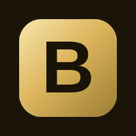

Melde dich mit den Zugangsdaten deines Lokals an.
Die Zugangsdaten bekommst du von Bestellux.
Eine eigene Registrierung gibt es hier nicht.
Du bist als Betreiber angemeldet.
Welches Lokal möchtest du öffnen?
Diese E-Mail ist noch keinem Lokal zugeordnet.
Melde dich bei Bestellux – wir schalten dein Lokal frei.
Keine Verbindung zum Server.
Prüfe WLAN oder mobile Daten und lade die Seite neu.
Ohne Verbindung kann niemand angemeldet werden – das schützt eure Bestellungen.